Гомель
Жильё
-
Hostel Х.О.
Улица Суворова 10/2 пом.1
Хостел «Х.О. - Витебск» находится в одноименном городе. Руководство создало максимально уютную и домашнюю атмосферу. На территории есть автостоянка, куда можно поставить машину. Хостел находится в живописном месте, можно спокойно отдохнуть всей семьей.
Поклонники культурного туризма могут посетить музей автографа, где представлены уникальные экспонаты. Дети оценят местный цирк и театр кукол, которые славятся насыщенной программой. Можно прогуляться в окрестностях, полюбоваться достопримечательностями.
Двухместный - от 42 BYN/сутки.
-
Hostel na Oktyabryskoy
Улица Октябарьская 10
В историческом центре Витебска, в окружении зданий XIX века расположен хостел «На Октябрьской 10». Одним из несомненных преимуществ хостела является близкое расположение ж/д вокзала и автовокзала.
Порадует постояльцев хостела и возможность воспользоваться сауной, бассейной, бильярдом, тренажерным залом, а также зоной отдыха с мангалом во дворе. Оборудованной кухни в хостеле нет, однако на общей кухне можно воспользоваться холодильником, чайником, микроволновой печью, посудой и столовыми приборами.
Одноместный номер - от 28 BYN/сутки.
-
Vetraz Hotel
проспект Черняховского, д. 25/1
Отель «Ветразь» находится в Витебске. Номера от стандартного до люкса и апартаментов замечательно скрасят отдых. В некоторых есть гостиная зона. Имеются двуспальные и односпальные кровати, телевизор, холодильник. В сервис входят: камера хранения, доступ в Интернет, автостоянка. На территории работает бар, ресторан, где предлагают специальное диетическое и детское меню.
Гости могут заказать экскурсии, чтобы познакомиться с местной культурой, прогуляться вдоль реки Западная Двина или заглянуть в Свято-Успенский кафедральный собор и дом-музей Марка Шагала.
Одноместный номер - от 60 BYN/сутки.
-
Отель “Лучёса”
Проспект Строителей, 1
Отель «Лучёса» расположен в километре от центра Витебска. Постояльцам предоставлен широкий спектр услуг, а удобное расположение позволяет добраться в любую точку города. Питание может осуществляться в ресторане отеля. Кафе и кухня также в свободном доступе. Завтрак является дополнительной услугой и оплачивается отдельно.
Отель предлагает бизнес-туристам переговорную комнату и конференц-зал. Помещения оборудованы всем необходимым. Круглосуточно можно воспользоваться услугами бизнес-центра.
Одноместный номер - от 67 BYN/сутки.
Достопримечательности
-
Дворец Румянцевых-Паскевичей
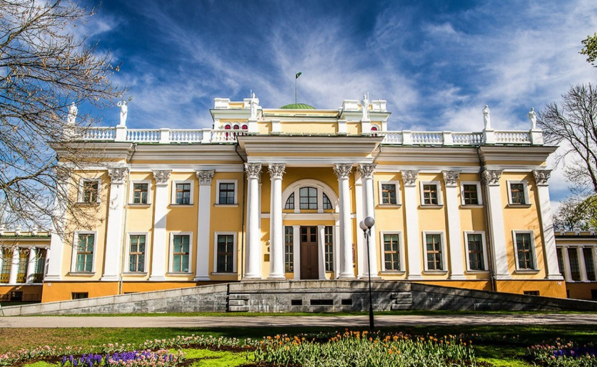Местоположение: Местоположение: Площадь Ленина, 4
Дворец входит в состав Гомельского дворцово-паркового ансамбля и считается его главным достоянием. Этот роскошный особняк, построенный в XVIII столетии в стиле классицизма, принадлежал графу Николаю Румянцеву и десятилетиями служил родовым поместьем. В первой половине XIX столетия потомки графа продали дворец полководцу князю Федору Паскевичу, который жил здесь до своей смерти в 1909 году.
Серьезный ущерб зданию нанесли Первая и Вторая мировые войны. Грабежи и бомбардировки практически полностью разрушили дворец и находившиеся рядом с ним постройки. Реставрация, вернувшая комплексу его прежний вид, прошла лишь в 1960 году. Богатая внутренняя отделка также была восстановлена. Особой популярностью среди посетителей пользуется Бальный и Колонный залы – просторные помещения, оформленные с истинно княжеским изыском.
-
Зимний сад Румянцевых-Паскевичей
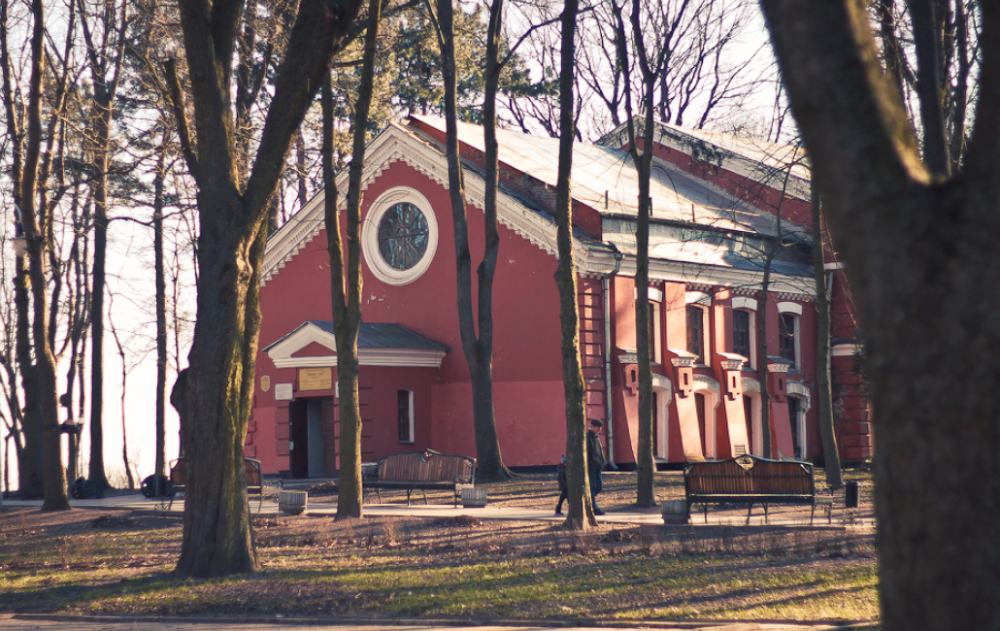Местоположение: Площадь Ленина, 4
Последний хозяин дворцово-паркового комплекса в Гомеле Фёдор Паскевич обустроил на его территории Зимний сад, который сохранился до сегодняшних дней. Конечно, зимний сад усовершенствовали, посадили ещё больше экзотических растений, но здесь сохранились деревья, которые садил Паскевич и фонтан, который он построил. В день своей свадьбы Паскевич и его будущая жена отчеканивали монеты и бросали в фонтан на счастье – сегодня эта традиция передалась гомельчанам. Влюблённые могут взять в Зимнем саду кувалду и на специальном станке отчеканить монеты, чтобы бросить в фонтан. В Зимнем саду вы найдёте разнообразие флоры и фауны. Это и экзотические растения, и растения из Красной Книги РБ, и морские свинки, и черепахи, и кролики. Мы думаем, что атмосфера Зимнего сада понравится каждому, кто сюда придёт. Взрослые могут исследовать старинную территорию, дети наблюдать за милыми животными, а влюблённые бросить монетку, чтобы всегда быть счастливыми.
-
Парк культуры и отдыха имени Луначарского
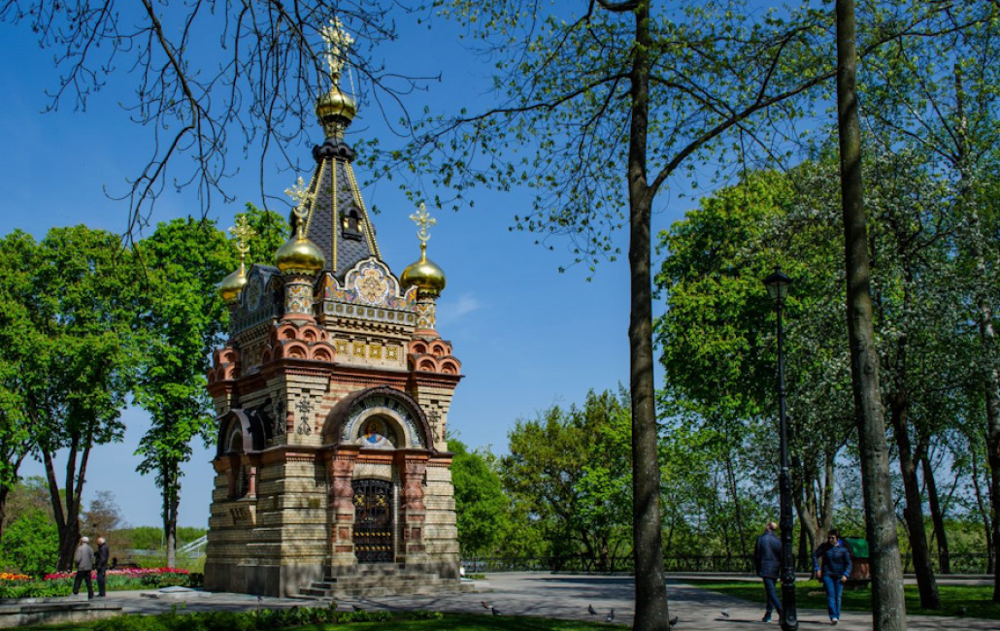Местоположение: Улица Пролетарская, 21
Парк культуры и отдыха имени Луначарского называют жемчужиной Гомеля. Это то место, где расположено много достопримечательностей и развлечений. Известный Гомельский дворцово-парковый ансамбль располагается здесь. Но дворец Румянцевых-Паскевичей не единственное, на что можно посмотреть – в парке, площадью 34 гектара, вы найдёте много интересного. Для начала стоит отметить чистоту и ухоженность парка: красивые цветочные клумбы, прогулочные аллеи, множество лавочек и фонтанов не могут не радовать тех, кто решил прогуляться. На деревьях и в траве вы найдёте белок – постоянных обитателей парка. Жители Гомеля сделали домики для милых животных, куда можно положить орешки, хлеб или семечки. Вы можете покормить белок с рук: за много лет обитания в парке, белки привыкли к людям и с радостью подбегают к протянутой ладошке с лакомствами. И детям, и взрослым кормление белочек принесёт массу положительных впечатлений. В пейзаж парка прекрасно вписывается река Сож – на набережной, которая тоже проходит через парк, вы можете сделать красивые фото. В парке проводятся масштабные мероприятия – это и концерты, и спортивные марафоны, и различные фестивали, и ярмарки. Также здесь находится парк аттракционов с колесом обозрения.
-
Музей истории города Гомеля
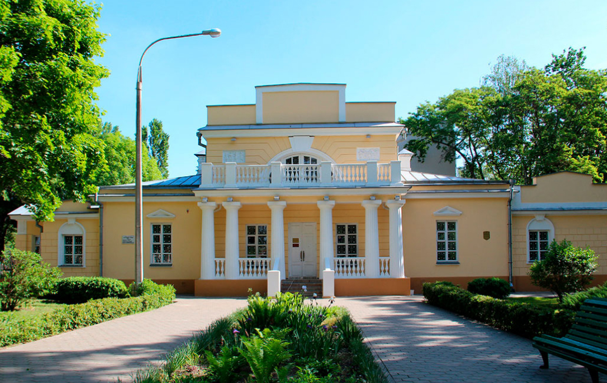Местоположение: улица Пушкина, 32
Хотя Гомель является одним из крупнейших городов Беларуси, многие годы он не имел музея, который отобразил бы его историю, культуру и современные достижения. В 2009 году в Республике отмечался «Год родной земли», в честь чего и был открыт долгожданный Музей истории Гомеля.
Экспозиции разместились в Охотничьем домике — старинном особняке, построенном в XIX столетии в стиле ампир. Архитектор И. Дьячков возводил его по заказу графа Румянцева, который пожелал иметь домик для летнего проживания. Это одноэтажное здание с мансардой и рельефными колоннами было отреставрировано и перепланировано для нужд музея.
В заведении действуют три постоянные экспозиции. В залах экспозиции «Интерьеры дворянского особняка XIX-XX вв.» воссозданы домашние убранства, привычные для семьи Румянцевых. Здесь можно увидеть гостиную, рабочих кабинет и будуар. Мебель, посуда, элементы текстиля и предметы быта — подлинные.
Экспозиция «История Гомеля от древности до современности» посвящена истории Гомельского района начиная от эпохи неолита и заканчивая XX веком. Среди экспонатов представлены археологические артефакты, княжеские регалии и вещи, пожертвованные горожанами из домашних архивов.
«Прогулка по старому Гомелю» — это фотовыставка, которую составляют негативы и пейзажные картины Гомеля разных лет.
-
Картинная галерея Гавриила Ващенко
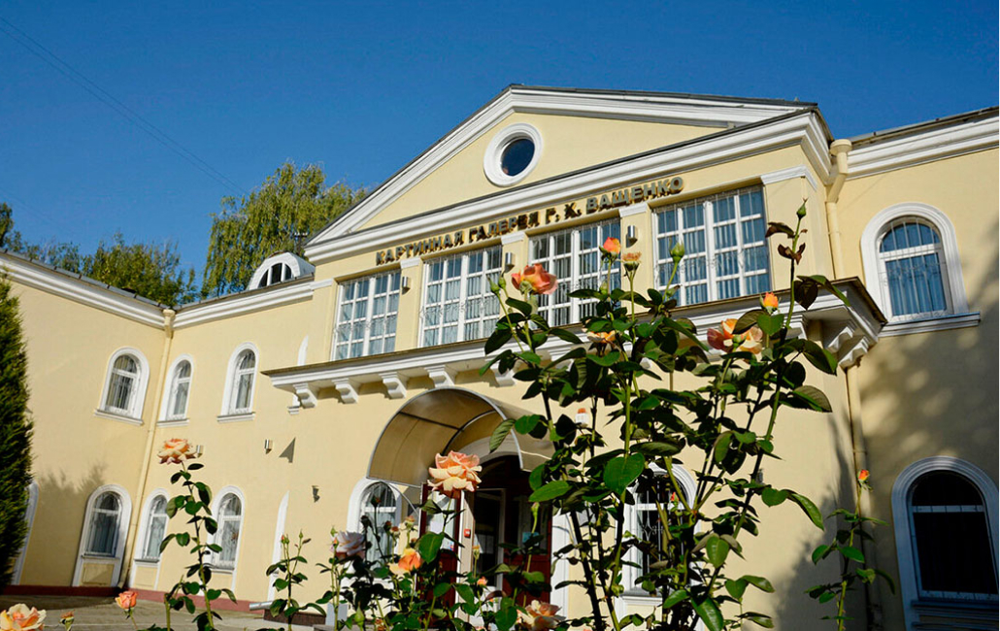Местоположение: улица Карповича, 4
Гавриил Харитонович Ващенко — белорусский художник, запечатлевший красоты и исторические события родного края в живописи, графике и скульптуре. Своим творчеством он оказал влияние на формирование всего белорусского искусства, за что удостоился звания Народного художника и Заслуженного деятеля искусств. В 2002 году его супруга — Матильда Ващенко — подарила городу коллекцию из 50 картин, которая впоследствии стала основой для картинной галереи.
Постепенно галерея пополнялась работами выдающихся художников современности и к настоящему времени количество экспонируемых полотен достигло четырехсот. Посетителям представляется возможность познакомиться с творчеством таких талантливых живописцев, как С. В. Тимохов, А.П. Ксендзова, Н. К. Казакевич и др.
Помимо выставок, в галерее регулярно организуются различные культурные мероприятия для взрослой и детской аудитории. В лекционных залах проводятся лекции, встречи с художниками, праздники и чествования. Кроме того, при галерее проходят конкурсы детского и юношеского творчества.
-
Свято-Петро-Павловский кафедральный собор
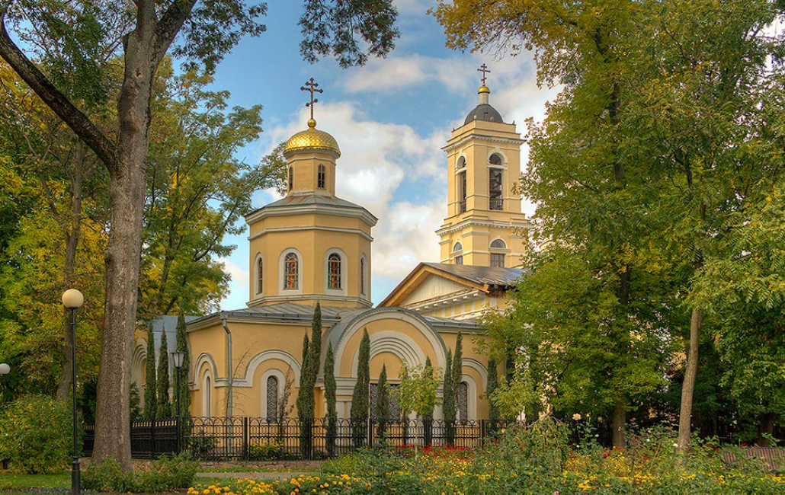Местоположение: площадь Ленина, 6
Петропавловский собор заложил протоиерей Иоанн Григорович осенью 1809 года во владениях графа Румянцева. Здание строилось по проекту английского архитектора Джона Кларка в стиле классицизма. Возведение длилось несколько лет и завершилось в 1924 году.
Расположенный на высоком мысу, собор был прекрасно виден издалека, а с его верхних этажей открывался изумительный вид на реку Сож.
За революцией 1917 года последовало массовой закрытие и разрушение культовых строений. Петропавловский собор прекратил богослужебную деятельность в 1935 году, но в период оккупации в 1940-х гг. на короткий срок возобновил ее. В 1960-х гг. здание церкви перестроили и отдали под планетарий. Помещение высокой колокольни освободили от колоколов и установили в ней большой телескоп. Возвращение храма Гомельской епархии состоялось в конце 1980-х гг. После реставрации двери Петропавловского собора открылись для прихожан, а летом 2008 года в его стены была ввезена икона преподобного Серафима Саровского с фрагментом мощей.
-
Костел Рождества Пресвятой Девы Марии
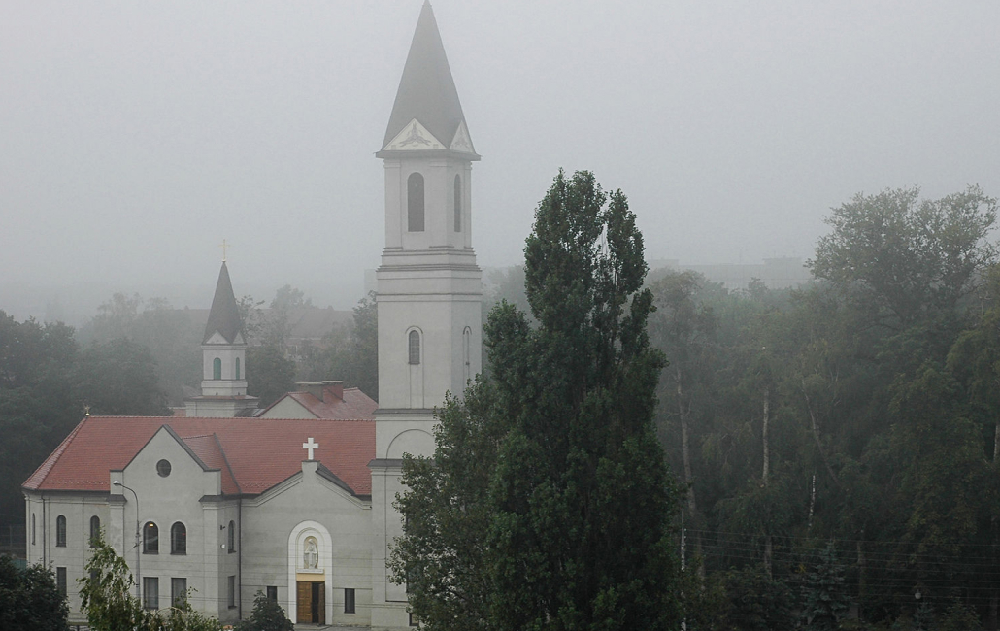Местоположение: улица Советская, 118
Когда в 1940 году единственный в городе костел был взорван, в Гомельской области отсутствовали филиалы Римско-католической церкви. Однако в конце 1980-х в Гомель прибыл польский священник Славомир Ласковски и убедил власти пойти католикам навстречу и посодействовать восстановлению храма.
Под религиозные нужды верующим было выделено здание бывшей православной церкви, построенное в 1886 году на Новиковском кладбище. На реконструкцию сооружения ушло много времени, сил и денег, но результат того стоил. С начала 2000-х у католиков появился новый костел в неоготическом стиле с двумя остроконечными башнями.
В нише над парадным входом установили каменную скульптуру Девы Марии с Младенцем-Христом на руках. Фасады украшают пилястры, стрельчатые окна с цветными витражами. Внутренние элементы декора составляют росписи с библейскими сюжетами, отделанные древесиной своды и византийские фрески.
Помимо богослужений, приход осуществляет социальную и благотворительную деятельность. Он находится в сотрудничестве с «Детской деревней» (интернат) и «Домом милосердия» (монашеская конгрегация).
-
Музей криминалистики
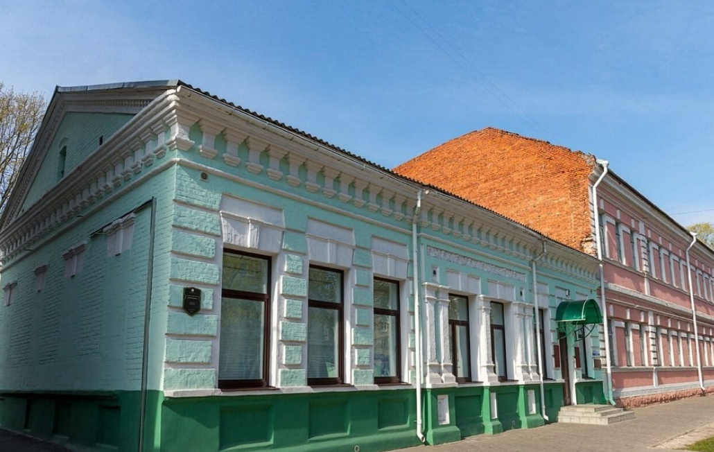Местоположение: улица Пушкина, 1
Экспозиция ”Музея криминалистики” создана на базе "Гомельского областного музея военной славы" по ул. Пушкина д.1, в 2010 г. Музей посвящен истории борьбы с преступностью на Гомельщине в 1917-2000-е гг. Здесь можно увидеть образцы оружия, милицейскую амуницию и снаряжение, фрагменты кабинетов эксперта-криминалиста и следователя конца ХХ в., мотоцикл ”Урал”, оборудованный сигнальными и звуковыми устройствами, наборы отмычек для вскрытия замков, а также поддельные документы и денежные знаки, изъятые у преступников. Посетители могут узнать о различных экспертизах, проводимых правоохранительными органами для раскрытия преступлений.
-
Обзорная башня в Гомельском парке
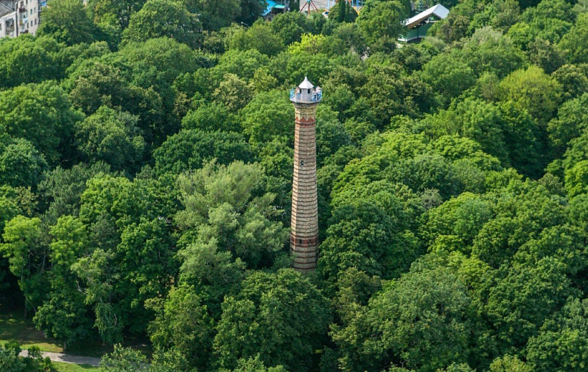Местоположение: Парк культуры и отдыха имени Луначарского
Для того чтобы полюбоваться Гомелем с высоты птичьего полета, вам для начала предстоит преодолеть около 200 ступенек обзорной башни, которая находится в старом городском парке.
Построенная в ХIХ веке на территории усадьбы Румянцевых-Паскевичей башня вызывает множество споров. Одни утверждают, что это всего лишь труба некогда действовавшего здесь завода, другие уверены, что у башни было другое предназначение. Первый владелец усадьбы – фельдмаршал Петр Румянцев-Задунайский – планировал возвести на этой территории дворянское училище, однако не успел. Следующий владелец, Иван Паскевич, переделал уже построенные для училища здания под сахарный завод. Тогда же и появилась кирпичная 40-метровая вытяжная труба, используемая для отвода продуктов горения и создания тяги. Однажды на заводе случился пожар, и остатки уничтоженных зданий пришлось снести. А уцелевшую трубу через некоторое время переделали под обзорную башню.
Впрочем, множество вопросов остается к архитектуре старинной башни: зачем в ней нужны окна? И почему башня торчит из земли, если это труба сахарного завода, которая могла бы торчать из здания? Также недавно под башней обнаружили подземные ходы, которые, вполне возможно, являются частью лабиринта, проложенного под самой древней частью города.
Кафе
- 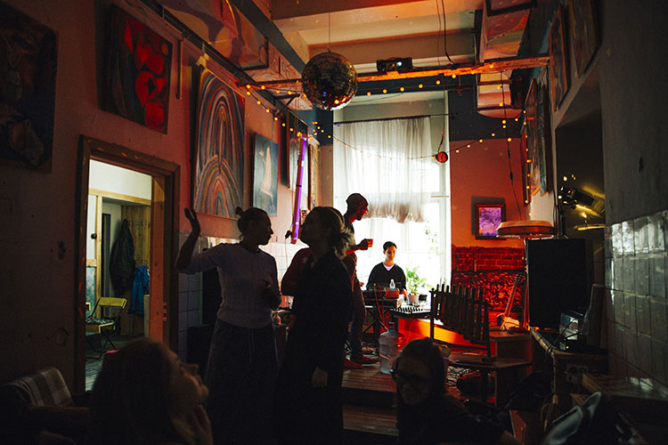
-
ЧАША МИРА
«Чаша Мира» – это арт-салон от создателей легендарного битлз-вагончика Cup of peace. Тут ребята ставят винил, готовят вегетарианское, ладят концерты, а что самое главное – выставляют работы местных художников.
В этом кафе царит непередаваемая атмосфера тепла, уюта, свободы и человеколюбия. Дух свободного творчества витает в воздухе вместе с ароматами волшебно вкусных кофейных напитков и вкуснейших вегетарианских блюд. В этом кафе проходят спонтанные ламповые концерты под фортепиано, поэтические вечера, различные мастер-классы, лекции и другие интересные мероприятия.
Улица Советская, 1
-
Этна Кафе
Наше уютное кафе — на центральной улице Советской. Интерьер оформлен в средиземноморском стиле, а ненавязчивая музыка располагает к проведению деловых встреч за обедом, семейных вечеров, встреч влюбленных пар и друзей.
Также у нас есть выбор вин разных стран: от Италии до Грузии, горячительных и слабоалкогольных напитков, алкогольных коктейлей, шотов и лимонадов. Каждый найдет то, что ему по душе.
Улица Ирининская, дом 6
- 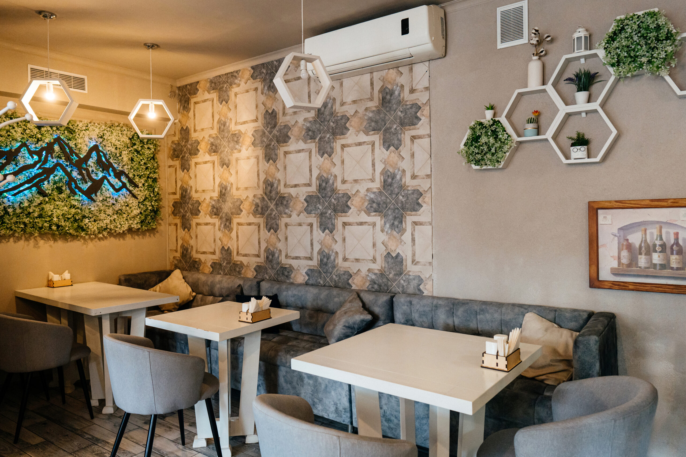